פתחו את הדף מאדווה, כדי שמה שתכתבו יישמר בתיק ההטמעה. בינתיים זה נשמר רק במחשב הזה.
לפני שמתחילים: מומלץ לצפות
שני סרטונים על Gemini Notebook. שניהם נוצרו ב-NotebookLM עצמו, מתוך מקורות.
3 דרכים לשלב את Gemini Notebook בלמידהדקה אחת
Gemini Notebook: העוזר לכיתה7 דקות
מה עושים ביחידה
- תרגיל 1: נוטבוק ראשון: מצגת עם רעיונות לשימוש ב-AI במקצוע שלכם.
- תרגיל 2: נוטבוק מחומרים של המקצוע שלכם: בוחן ואינפוגרפיקה.
- המשימה: נוטבוק שמציע פתרונות לצורך של הצוות, ואתם בוחרים את הפתרון שאתם מאמצים.
הגשה . כל מה שכותבים נשמר לבד.
מה שכתבתם במפגש 2 כבר כאן. משלימים רק מה שחסר.
נתקעתם? הכפתור "נתקעתי" בתחתית המסך שולח לנו הודעה, ונעזור לכם מרחוק.
מצגת שמסבירה את NotebookLM
תרגיל 1 · כ-15 דקותנוטבוק ראשון: מצגת
3מחפשים מקורות
בחלון הוספת המקורות מדביקים בתיבת החיפוש למעלה, ולוחצים על החץ.
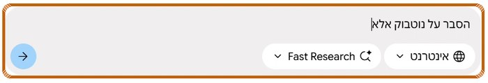
4מייבאים את המקורות
אחרי כמה שניות מופיעים המקורות שנמצאו. לוחצים ייבוא.
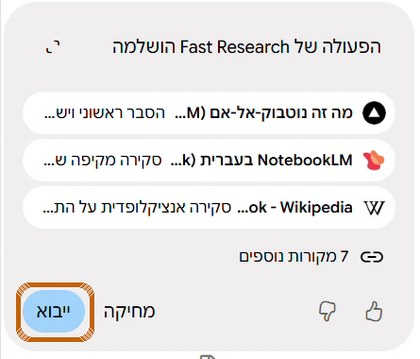
5מוציאים מצגת
קודם השפה: גלגל השיניים ← שפת הפלט ← עברית.
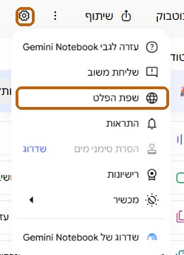
אחר כך, בסטודיו, לוחצים מצגת. זה לוקח כמה דקות.
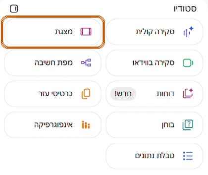
6הקישור לנוטבוק
תרגיל 2 · כ-20 דקותנוטבוק מחומרים של המקצוע שלכם
7נוטבוק חדש, עם חומר שיש לכם
עוד נוטבוק חדש. הפעם מוסיפים חומר מהמקצוע שלכם: דף עבודה, חוברת, מצגת או אתר.
קובץ? לוחצים העלאת קבצים.
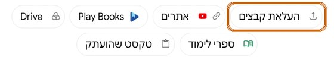
אתר? לוחצים אתרים, מדביקים את הקישור ולוחצים הוספה.
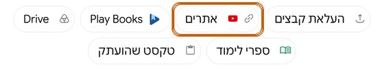
8בוחן ואינפוגרפיקה
בסטודיו לוחצים בוחן, ואחר כך אינפוגרפיקה.
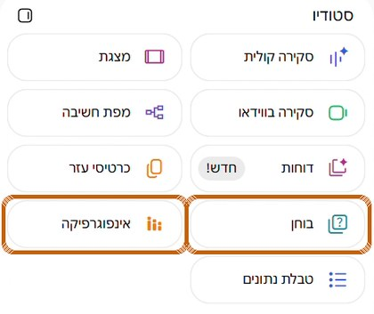
9הקישור לנוטבוק
המשימה · להגשהפתרונות לצורך של הצוות
11מה ראיתי בנתונים
רשות: בודקים את ההשערה עם Gemini
- בדשבורד לוחצים הורדת התשובות בלי שמות.
- פותחים את Gemini, מעלים את הקובץ, מעתיקים את הפרומפט ושולחים.
פתיחת Gemini
13נוטבוק חדש, עם הנתונים של בית הספר
1. פותחים נוטבוק חדש.
2. בדשבורד, ליד התשובות הפתוחות: הכנה לניתוח AI, ואז העתקה.
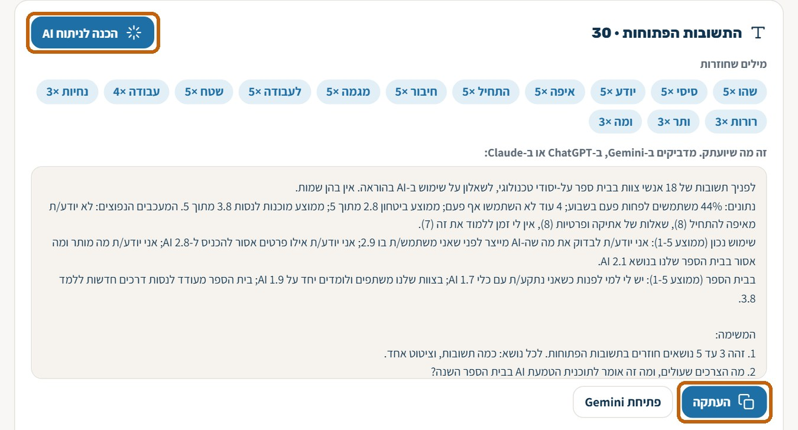
פתיחת הדשבורד
3. בנוטבוק לוחצים טקסט שהועתק…
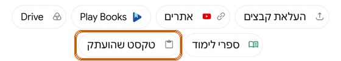
4. …מדביקים ולוחצים הוספה.
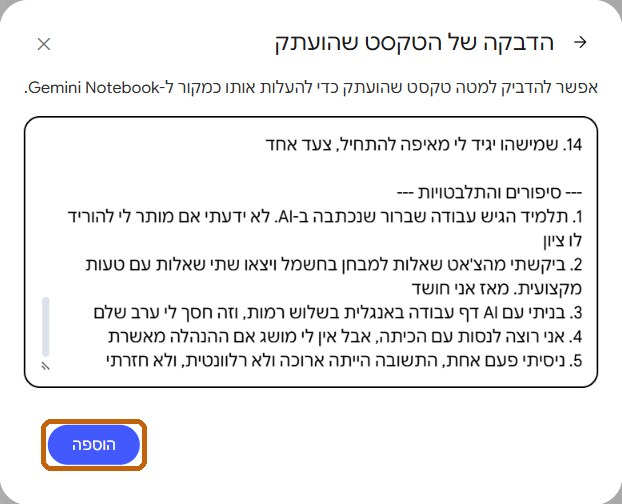
14מוסיפים את המקורות לצורך
1. כאן מעתיקים
←
←
3. לוחצים "אתרים", מדביקים ← "הוספה"
15שואלים את הנוטבוק על פתרונות
מדביקים בתיבת השאלות ולוחצים על החץ.
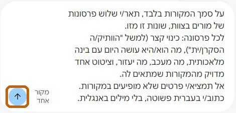
16מה הנוטבוק הציע, ומה אני מאמץ/ת
17שלוש פעולות לצוות
איך מוציאים את הפתרון לפועל? לכל פעולה: מתי, ועם מי.
רעיונות לצורך שבחרתי
18כללי הבסיס שלנו
- לא מזינים שמות או פרטים מזהים של תלמידים ומורים.
- מעלים רק קבצים בלי שמות, כמו הקובץ מהדשבורד.
- מורה בודק/ת כל תוצר לפני שהוא מגיע לתלמיד/ה.
- בטיחות ותוכן מקצועי רק ממקור מאושר.
19מגישים
אחרי שלושת הקישורים, מה הנוטבוק הציע, והפתרון שאתם מאמצים.
20רעיונות לשיעור עם AI
רעיונות לפי מקצוע, עם פרומפט מוכן לכל רעיון.
דף הרעיונות21משוב